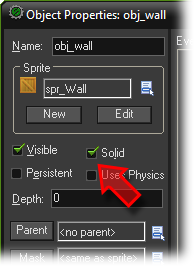

Tutorial
Page 6 of 15
Adding Objects
So how does this all this come together for the game we are making? to start with, we will need two objects. Let us first create the very simple wall object, as this object needs no behavior at all since it will not react to any events
in the game world.
To create the wall object you must follow these simple steps:
- From the drop down Resources menu in the main GameMaker window choose Create Object. The Object Properties form appears, as is shown below:
- Click on the Name field and rename the object to "obj_wall".
- Click on the menu icon at the end of the Sprite field and in the list of available sprites select the "spr_wall" sprite.
- Instances of the wall object must be solid, that is, no other instances should be allowed to penetrate them. To this end click on the box next to the Solid property to enable it.

- Press OK to close the form.
For the clown object we start in the same way:
- From the Resources menu, choose Create Object.
- Click on the Name field and rename the object to "obj_clown".
- Click on the icon at the end of the Sprite field and select the "spr_clown" sprite.
Note that we do not make the clown object solid! Now, for the clown there is a lot more that needs to be done as we have to specify its behavior.
Click on the Next button to go to the next page of the tutorial.